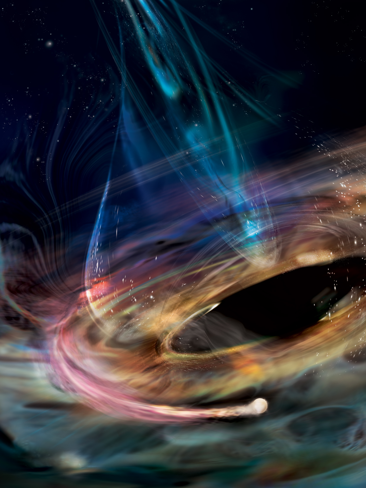

I'm broadly interested in understanding the physics, formation, and growth of supermassive black holes. My PhD work has focused on discovering and characterizing interesting transients from supermassive black holes, including tidal disruption events (TDEs) and changing-look active galactic nuclei (AGN). I have used novel spectroscopy techniques to disentangle the geometry of gas flows around ordinary AGN and studied the evolution of AGN feedback in galaxy clusters through a multi-wavelength lens. Read more about my research interests below!
Tidal Disruption Event Dust Echoes

The Dynamic X-ray Corona
High Resolution X-ray Spectroscopy
Cosmic Evolution of AGN Feedback
×
Tidal Disruption Event Dust Echoes
When an unfortunate star wanders just a little too close to a supermassive black hole, the tidal forces of the black hole can exceed the star's self-gravity, ripping the star apart and temporarily awakening a previously dormant black hole.
As some of the stellar debris accretes onto the black hole, a temporary flare of emission is released across a variety of wavelengths, allowing us to study these previously invisible supermassive black holes.
The recent advances in optical time-domain surveys have propelled the field of TDEs into the population regime, but there is growing evidence that these surveys may be biased against finding TDEs in dusty, gas-rich environments, which are expected to be common in the nuclei of star-forming galaxies.
Obtaining a full census of TDEs and understanding observational biases is crucial for using TDEs as probes of supermassive black hole demographics.
To this end, I led the first systematic search for TDEs in the mid-infrared (MIR) band using data from Wide-field Infrared Survey Explorer (WISE), which scanned the sky in two filters every 6 months from 2013-2024.
The MIR is the ideal wavelength regime to search for TDEs in dusty nuclei, as the UV/optical emission from the TDE is absorbed by surrounding dust and re-radiated at longer wavelengths, producing a "dust echo" that peaks in the MIR.
In Masterson et al. (2024), we identified 12 TDEs within 200 Mpc, the majority of which were missed by optical surveys.
This sample includes the closest TDE discovered to date, first published in Panagiotou et al. (2023).
These MIR-selected TDEs occurs at a comparable rate to optically selected TDEs, no strong preference towards post-starburst galaxies (as is commonly seen in optical samples), and help solve the TDE Missing Energy Problem by revealing the extreme UV light that is impossible for us to measure directly.
This work demonstrates that MIR time-domain surveys are a powerful tool for obtaining a complete census of TDEs and probing the dusty, circumnuclear environments of supermassive black holes.
Left: Total energy released by the WISE TDEs (purple) compared to optically selected TDEs (pink), showing that the WISE TDEs get much closer to the theoretical expectation for energy released during a TDE.
Right: Host galaxy properties of these TDEs, showing that they occur in a variety of galaxy types, unlike optically selected TDEs which prefer post-starburst galaxies.
Adapted from Masterson et al. (2024).
I presented these results at the 2024 UCSB KITP TDE workshop, and you can watch the recording below.
Building on this foundation, in Masterson et al. (2025b) we obtained the first JWST/MIRI spectra of TDEs, providing an unprecedented view of their circumnuclear environments.
All four TDEs in our sample display compact, accretion-driven emission lines from highly ionized gas, alongside strong silicate dust emission features at 10 and 18 µm.
These spectra demonstrate that dust heated by TDEs is largely optically thin and that these features are much stronger than those seen in normal AGN with dusty tori.
We modeled the expected time-dependent MIR spectrum, finding that most sources show a short-wavelength (< 8 µm) excess that may represent a late-time plateau in the flare emission, similar to the UV behavior of unobscured TDEs.
Together, these results establish JWST as a transformative tool for studying black holes in dusty nuclei, and they pave the way for detailed modeling of how stellar disruptions interact with surrounding gas and dust.
JWST/MIRI spectra of four TDEs, showing strong high ionization lines (dark green) and strong silicate emission features at 10 and 18 µm (dark purple).
Figure 1 from Masterson et al. (2025b).
I am also involved in many follow-up efforts to characterize the multi-wavelength properties of these IR-selected TDEs.
Recently, Golay et al. (2025) completed a radio study of WTP14adeqka, finding that it shows a delayed radio outflow, similar to what is seen in optically selected TDEs.
With VLBA observations, we showed that this is the first resolved radio outflow from a TDE, allowing us to directly measure the expansion speed of the outflow and estimate its kinetic energy.
Stay tuned for more exciting results from IR-selected TDEs in the near future!
×
The Dynamic X-ray Corona
Work in progress... check back soon!
×
High Resolution X-ray Spectroscopy
During my Masters work at the University of Cambridge, I worked with data from the High Energy Transmission Grating on the Chandra X-ray Observatory to probe the narrow Fe Kα line around nearby AGN. Despite this line being nearly ubiquitous in AGN X-ray spectra, its origin is still debated.
In Masterson et al. (2022b), we used a novel spectroscopy technique that leveraged the fact that in a dispersive spectrograph, the spatial extent of the emitting gas will impart an additional broadening to the line that is
different across different spectral orders. By combining three different spectral orders, we were able to disentangle the effect of velocity broadening (which is constant across different spectral orders) and spatial extent.
This new technique provides unique constraints on the location of the emitting material, which is nearly impossible to do with standard imaging techniques, even with the best resolution provided by Chandra.
This analysis revealed that the Fe Kα line in our sample of nearby AGN is typically produced in the dusty torus, consistent with other recent work, but with a larger radius than is typically inferred from dynamical broadening alone.
In the future, I'm interested in applying similar techniques with the recently launched XRISM mission.
Inferred spatial extent from spatial broadening (y-axis) compared to the inferred dynamical radius (x-axis).
The larger spatial extents measured using this new technique imply that neglecting the effects of spatial broadening lead to underestimated radii.
Figure 4 from Masterson et al. (2022b).
×
Cosmic Evolution of AGN Feedback
I am also broadly interested in how accretion can impact a black hole's surroundings,
and have worked on this avenue by exploring AGN feedback in galaxy clusters as a senior
undergrad and during the first year of my PhD. In Masterson et al. (2023a),
I worked with Prof. Mike McDonald on a relaxed galaxy cluster at z ~ 1.4 (high redshift for galaxy clusters!).
This system looked surprisingly like many of the low-redshift galaxy clusters that have been studied for the last few decades --
namely, it showed a cool core in the X-rays with a strong radio source associated with the brightest cluster galaxy (BCG) that had enough power to
prevent the gas from cooling. Essentially, this high-redshift cluster showed well-regulated AGN feedback, where the central supermassive black hole
in the BCG is able to prevent gas in the galaxy cluster from cooling! This is the most distant cluster we know of that has these properties,
and thus, it helps set limits on when AGN feedback became a well-regulated and normal process in the universe!
Left: Chandra X-ray image of the galaxy cluster SPT-CLJ0607-4448 at z = 1.4, showing a bright X-ray center, indicative of a dense, cool core.
Center: Hubble optical image of the BCG in SPT-CLJ0607-4448.
Right: ATCA radio image, showing a radio point source associated with the BCG.
The relaxed X-ray morphology, passive elliptical BCG, and radio point source together indicate well-regulated AGN feedback at high redshift.
Figure 1 from Masterson et al. (2023a).